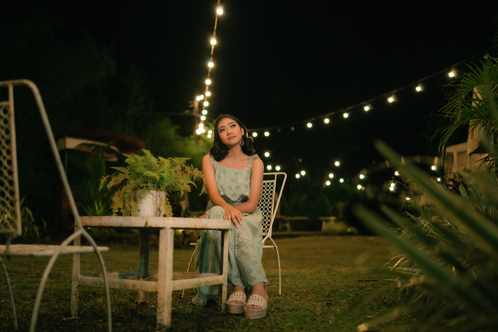

About Dan Tamba
Dan Tamba is a professional photographer based in Sibalom, Antique. At the age of 21, Dan has established himself as a prominent figure in the photography industry, known for his unique approach to portrait and fashion photography. His work often explores themes of identity, beauty, and the human experience, capturing the essence of his subjects with a distinctive artistic style.
Details:
- Age: 21
- Based in: Sibalom, Antique
- Type of Work: Portrait Photography, Fashion Photography, Editorial Shoots
- Experience: 6 years in the industry
- Exhibitions: Milan Fashion Week, Paris Photo, New York Art Fair
- Education: Bachelor's in Science in Information Technology, University of Antique
- Notable Clients: Lin-ay Kang Antique, Sunlife
- Favorite Equipment: Sony A74, 35mm 1.4f lens
Photography Style:
Dan's photography style is a blend of natural light and studio settings, with a focus on capturing the raw and unfiltered moments of his subjects. He believes in creating a comfortable atmosphere during shoots to bring out the true personality of the people he photographs.


